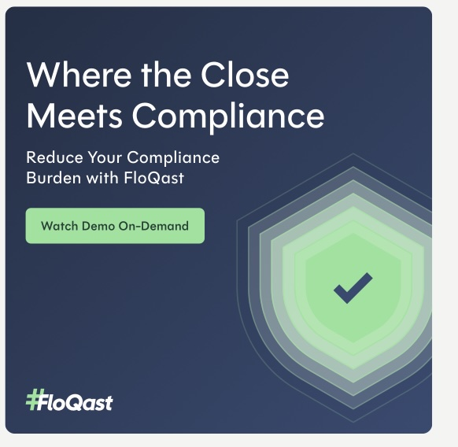
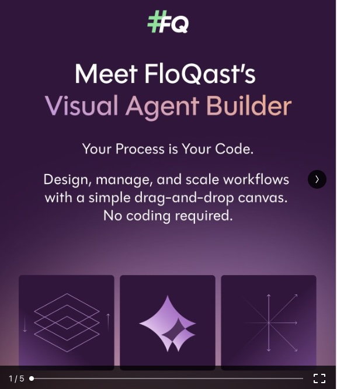

FloQast
Brand System
& Rebrand
Built from Scratch.
Scaled Across the Team.
Market-Ready.
2023–Present · FloQast
FloQast needed to elevate its visual identity and build a scalable creative system — establishing consistent design standards across a growing in-house team and expanding channel mix, while repositioning the brand for a larger enterprise market.
Led the internal rebrand as the creative function leader — building design standards and creative systems from scratch, aligning stakeholders across product, marketing, and leadership, and managing execution from concept through deployment. Developed processes for intake, prioritization, and review that the team could run independently.
A cohesive, scalable brand experience deployed across all channels and team members — with creative systems that improved team throughput, consistency, and quality, supporting messaging around AI Agents, compliance, and the accounting close process.


